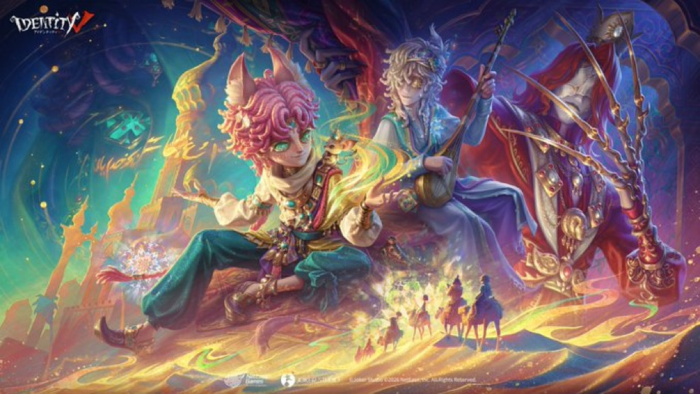
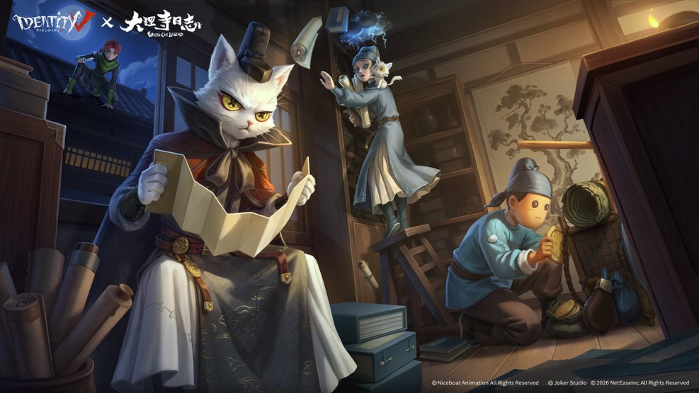
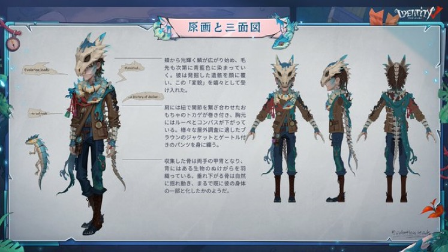
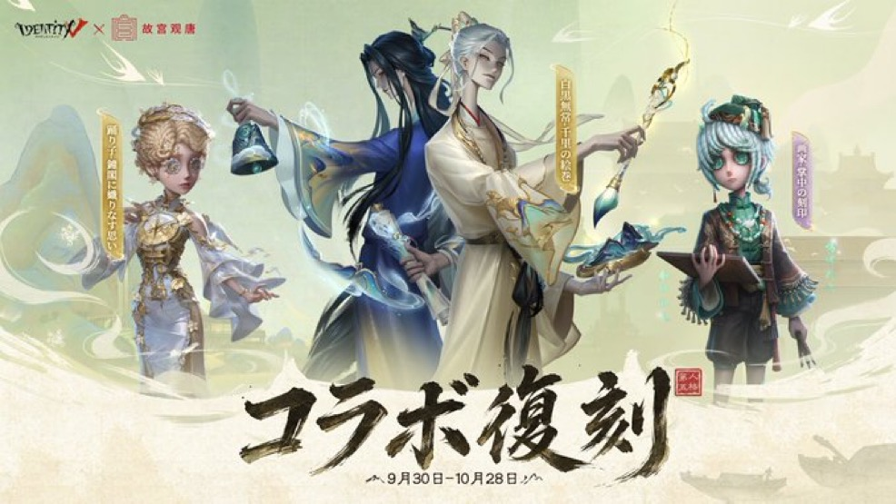
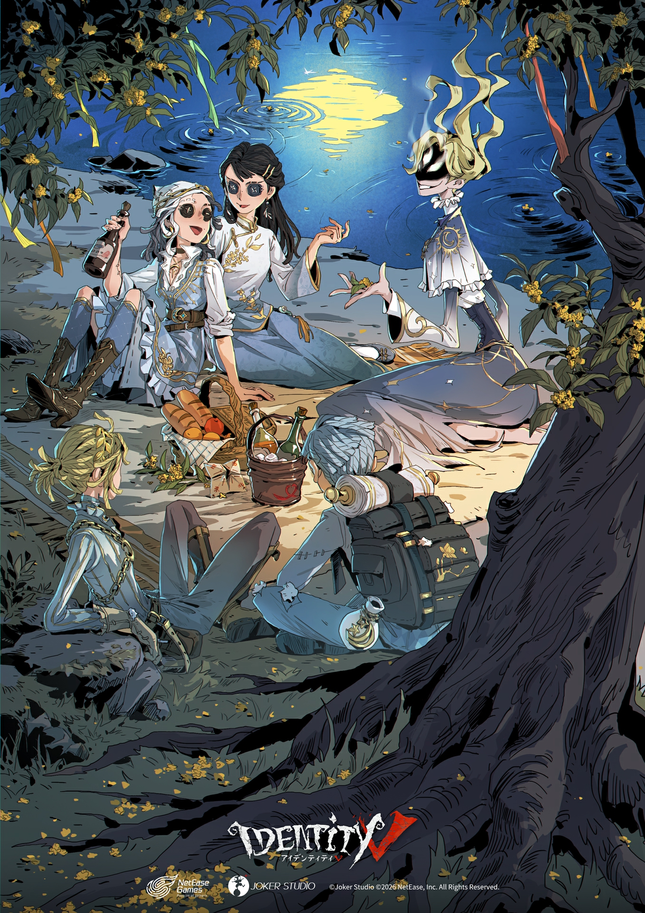
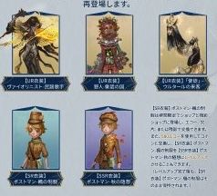
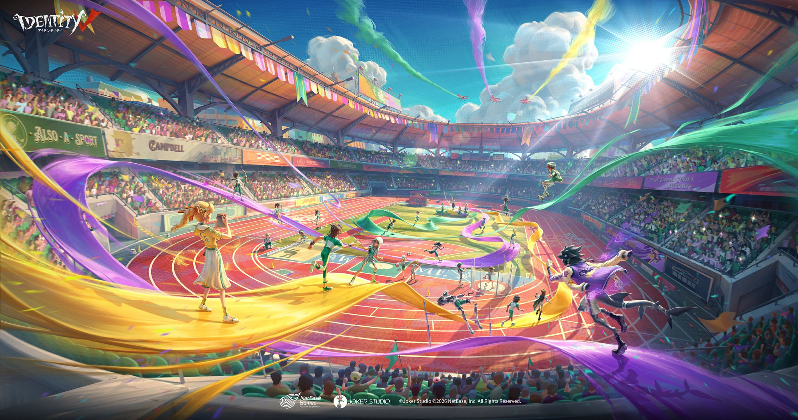
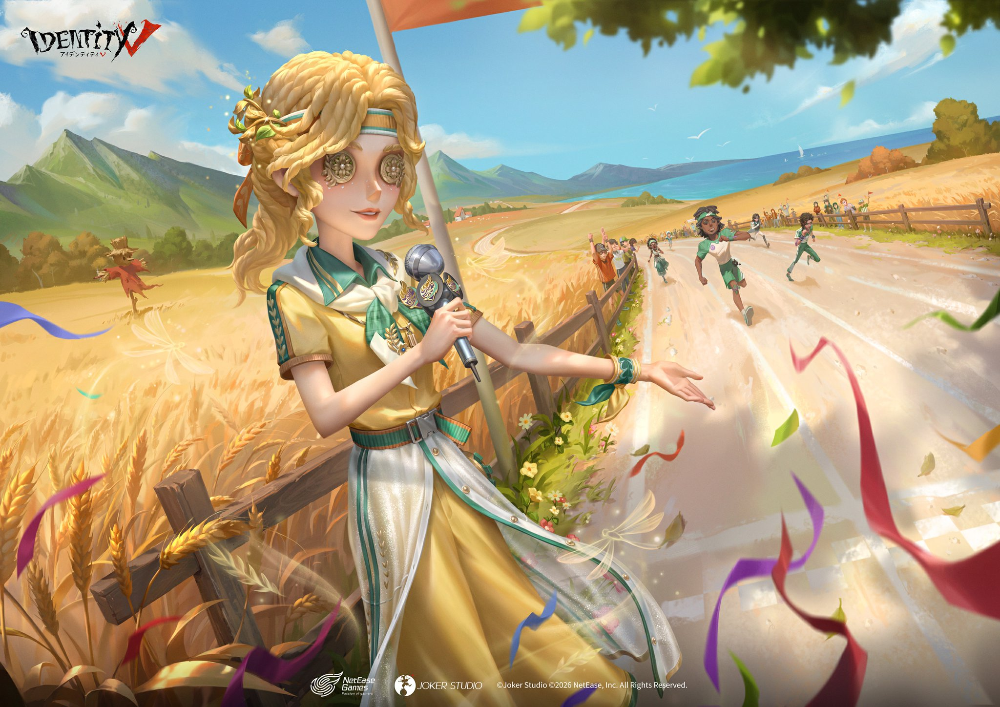
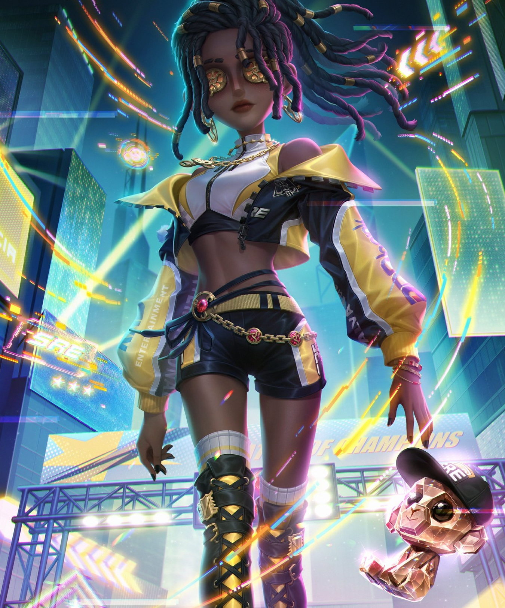
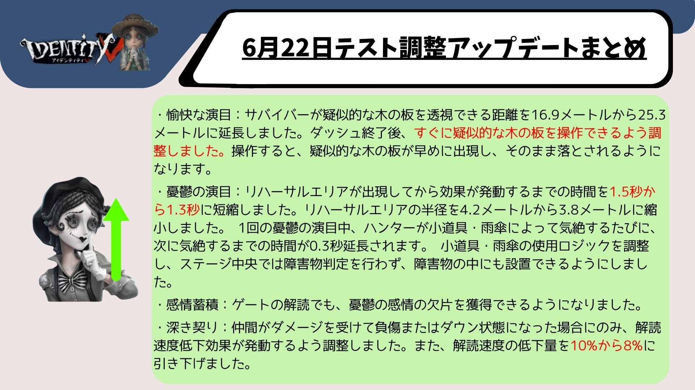

IdentityV（第五人格）の2026年9月に実施されたアップデート・イベント・キャラ調整のまとめです。
2026.9.30現在

新サバイバー「神童」カイが登場！
泥団子を転がしてハンターの塵埃値を蓄積させ、100に達するとハンターを行動不能にできる個性派サバイバー！泥団子が大きくなると玉乗り公演で高速移動も可能！
キャラクター詳細はこちら
へむへむの一言
神童っぽくない玉転がしのかわいいスキルだけど、ここ最近の出てきたサバイバーで今のところ最強レベルのサバイバー

シーズン真髄 S44・真髄2が開放！
【UR衣装】「神童」-嘘、【SSR衣装】墓守-蒼白の旅、【SSR衣装】リッパー-予言の毒蛇が新たに追加されます！
抽選80/130回達成で対応アイコンを1つ選択、180回達成で【アイコン】「神童」-嘘を獲得できます。
へむへむの一言
みんなより早く神童を使いこなして、ランクマで無双したい

Identity V×大理寺日誌コラボ開催！
【UR衣装】闘牛士-李餅を含むパックが31%オフの2688エコーで登場！ログイン・対戦・ミニゲームに参加すると【SSR衣装】曲芸師-一枝花、【SSR家具】蓄音鶏などの豪華ボーナスも無料で獲得できます！
【SSR衣装】冒険家-陳拾・画家-崔倍も各1388エコー（初週15%オフ・1178エコー）で登場！
販売期間：2026年9月30日メンテナンス後〜2026年10月30日23時59分
コラボ情報の詳細はこちら
へむへむの一言
今回の闘牛士の衣装必ずGETしておきたい。ムレータ後の衣装チェンジもあり凄まじくかっこいい！！絶対獲得しておこう

ウィムジーシリーズ【UR衣装】教授-変質がショップに登場！
2888エコーまたは12888欠片で購入可能！初週25%オフの2158エコーで販売されます。
販売期間：2026年9月30日メンテナンス後〜2026年10月28日23時59分

Identity V×故宫观唐シリーズが期間限定再登場！
【UR衣装】白黒無常-千里の絵巻・踊り子-鐘閣に織りなす思いを含むパックが31%オフの3268エコーで再登場！単品は各2888エコー（エコーのみ）で購入可能！
手記の加筆にも故宮コラボ詞章「金甌永固杯」など新詞章・新叙事手法「日時計の導き」が追加されます！
再登場期間：2026年9月30日メンテナンス後〜2026年10月28日23時59分
2026.9.24現在

中秋節バージョンイベント「桂下の祈り」開催！
中秋の月夜に伝統ゲーム「博餅」を楽しもう！ログイン・ストーリー・博餅・対戦に参加して【木犀の便箋】を集め、時空の影【SSR携帯品】-月盞、【SSR家具】-木犀の風鈴、骨董商【SR衣装】-月枝などの豪華ボーナスと交換できます！
博餅は4人で楽しむサイコロゲーム！「状元」になると【状元帽】を獲得でき、公共マップで着用できます。
イベント期間：2026年9月24日メンテナンス後〜2026年10月7日23時59分
詳細はこちら
eスポーツシリーズ・スポーツテーマ衣装が期間限定再登場！
OPH・BLK・SREシリーズのSSR衣装がエコーで購入可能！スポーツテーマSR衣装が40%オフで登場！【UR衣装】バッツマン-チャンピオン舵手などはエコーまたは欠片でも購入できます。
再登場期間：2026年9月24日メンテナンス後〜2026年10月7日23時59分
へむへむの一言
大人気eスポーツシリーズが再登場！まじ全衣装かっこいい

秋シリーズUR衣装が期間限定再登場！
【UR衣装】ヴァイオリニスト-民謡歌手・野人-童話の国・「使徒」-ウルタールの来客が各2888エコーまたは12888欠片で再登場！対応【SSR携帯品】も各1068エコーまたは3888欠片で購入可能！
再登場期間：2026年9月24日メンテナンス後〜2026年10月21日23時59分
へむへむの一言
秋シリーズ衣装が欠片でも買えるチャンス！忘れぬうちに購入しておこう。
2026.9.17現在

バージョンイベント「光と夢を追って」開催！
オレトゥス運動会が開幕！ログイン・選手育成・運動会場プレイに参加して、SSR家具-この一瞬を永遠に、全キャラ従者-シャオシャオ、テーマシリーズSSR衣装（記者・幸運児・魔トカゲから1択）などの豪華ボーナスを獲得しよう！
イベントSR衣装はカスタム染色対応！自分だけのオリジナルカラーにカスタマイズできます。
イベント期間：2026年9月17日メンテナンス後〜2026年10月7日23時59分
詳細はこちら
へむへむの一言
それぞれの衣装が体育祭みたいでかわいい！2VS8とかで10人全員同じ衣装とかで遊びたいなぁ

運動会テーマSSR衣装・SR衣装がショップに登場！
【SSR衣装】記者-初穂・幸運児-緑陰・魔トカゲ-紫電が各1388エコー（初週15%オフ・1178エコー）で登場！
医師・庭師・傭兵・空軍・機械技師など全24種のSR衣装も60エコーまたは1088欠片で購入可能！
販売期間：2026年9月17日メンテナンス後〜2026年10月14日23時59分

eスポーツシリーズ新衣装・占い師新衣装がショップに登場！
Born to Dominate! We are Team
SRE！【SSR衣装】呪術師-SRE.PATRICIAと【UR携帯品】呪術師-星鳴りの反響のパックが20%オフの2618エコーで購入可能！
【SSR衣装】占い師-カンハネズも1388エコーまたは4888欠片・63800金リンゴで購入可能！
販売期間：2026年9月17日メンテナンス後〜2026年10月14日23時59分
へむへむの一言
呪術師の中で過去最高といっていいほどカッコイイ衣装が登場！見逃せない
2026.9.4現在

キャラ・天賦・マップ調整が実施！
【サバイバー調整】マイムアーティストの疑似木の板透視距離が16.9mから25.3mに延長！憂鬱の演目や感情蓄積なども調整されました。作曲家・小説家も調整あり。
【ハンター調整】「心の獣」が再度下方修正。追襲クールタイムが16秒に延長、追跡探知範囲が30mから25mに縮小など複数の調整が実施されました。復讐者は新外在特質「怨念熾盛」が追加され強化！夢の魔女の原生信者も強化されました。
【天賦調整】「傷弓之鳥」の発動範囲が20mから16mに縮小、「愛着効果」の自動回復速度が低下しました。
【マップ調整】月の河公園のスプリングボックスに使用後45秒間の再使用制限が追加されました。
キャラ・天賦バランス調整の詳細はこちら
へむへむの一言
マイムアーティスト少し人気なかったけど、遠方から補助傘投げれるの強すぎる！新環境入り確定